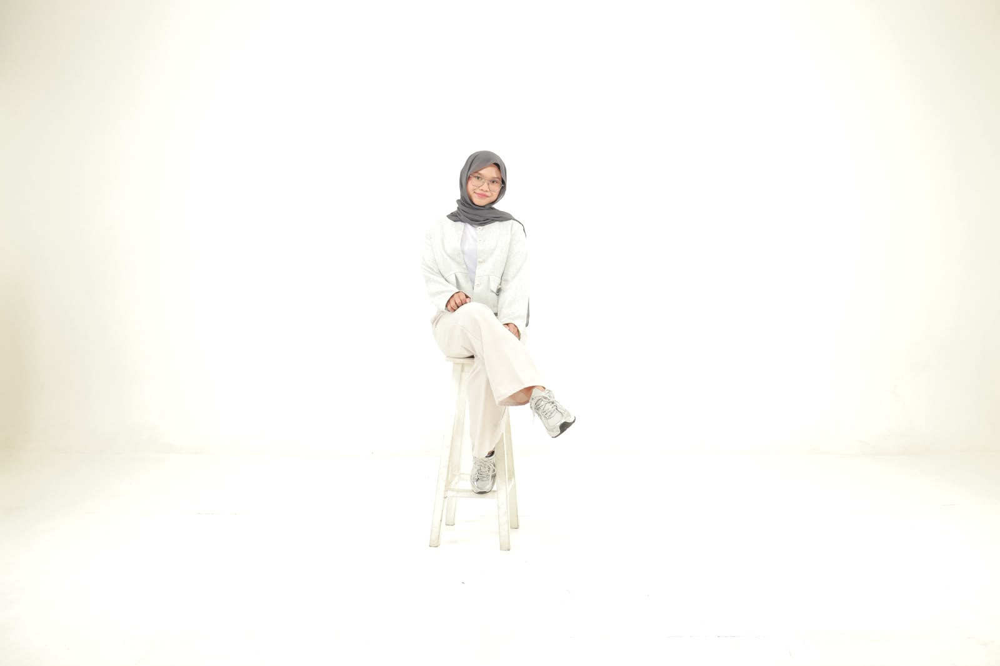
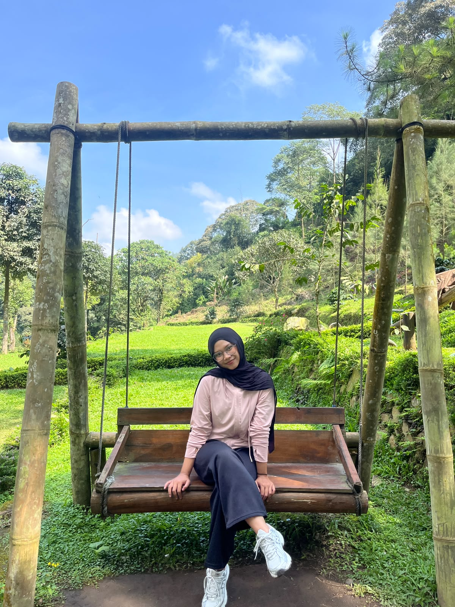
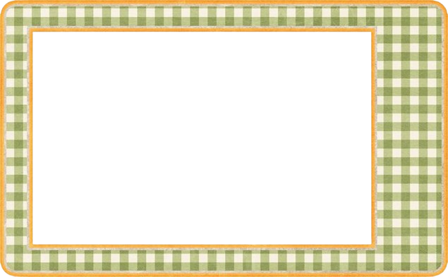

Welcome to my
personal

Halo semuanya!!, Kenalin nama ku Zahra Naila Irwannda. Mahasiswa program studi Sistem Informasi Fakultas Ilmu Komputer Universitas Brawijaya angkatan 2025 yang sekarang menempuh semester 2. Sebagai mahasiswa dibidang IT, aku punya ketertarikan di bidang teknologi dan informasi. Selain aktif dalam perkuliahan, aku juga aktif mengikuti kegiatan organisasi.
Bagi saya, menjadi mahasiswa bukan hanya tentang memperoleh ilmu, tetapi juga tentang membangun karakter, memperluas relasi, dan menemukan berbagai peluang untuk berkembang.


Menjadi mahasiswa yang merantau dari tempat kelahiranan, aku dipaksa untuk bisa beradaptasi dengan lingkungan baru, mempelajari hal hal baru, dan belajar bertanggung jawab.